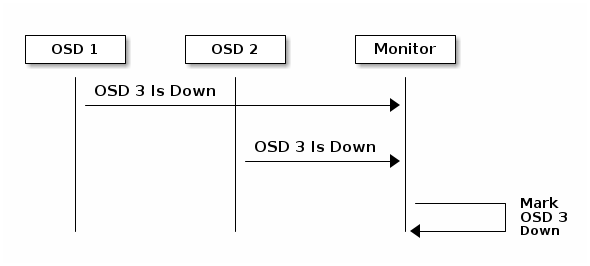
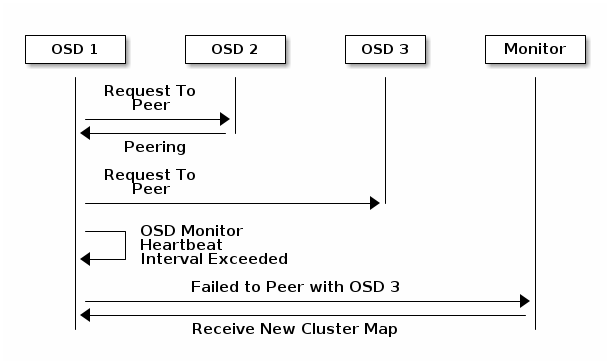
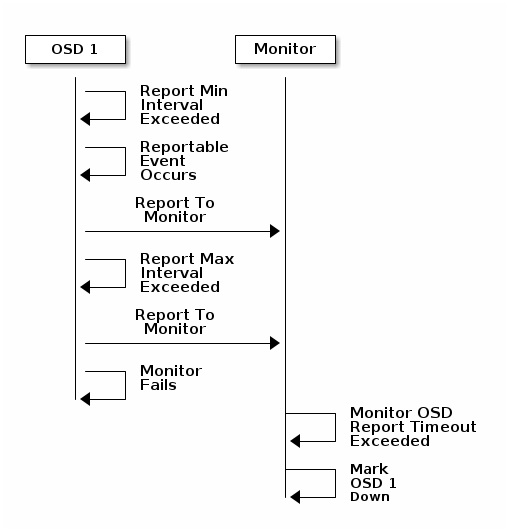

Notice
This document is for a development version of Ceph.
Configuring Monitor/OSD Interaction
After you have completed your initial Ceph configuration, you may deploy and run
Ceph. When you execute a command such as ceph health or ceph -s, the
Ceph Monitor reports on the current state of the Ceph Storage
Cluster. The Ceph Monitor knows about the Ceph Storage Cluster by requiring
reports from each Ceph OSD Daemon, and by receiving reports from Ceph
OSD Daemons about the status of their neighboring Ceph OSD Daemons. If the Ceph
Monitor doesn’t receive reports, or if it receives reports of changes in the
Ceph Storage Cluster, the Ceph Monitor updates the status of the Ceph
Cluster Map.
Ceph provides reasonable default settings for Ceph Monitor/Ceph OSD Daemon interaction. However, you may override the defaults. The following sections describe how Ceph Monitors and Ceph OSD Daemons interact for the purposes of monitoring the Ceph Storage Cluster.
OSDs Check Heartbeats
Each Ceph OSD Daemon checks the heartbeat of other Ceph OSD Daemons at random
intervals less than every 6 seconds. If a neighboring Ceph OSD Daemon doesn’t
show a heartbeat within a 20 second grace period, the Ceph OSD Daemon may
consider the neighboring Ceph OSD Daemon down and report it back to a Ceph
Monitor, which will update the Ceph Cluster Map. You may change this grace
period by adding an osd heartbeat grace setting under the [mon]
and [osd] or [global] section of your Ceph configuration file,
or by setting the value at runtime.
OSDs Report Down OSDs
By default, two Ceph OSD Daemons from different hosts must report to the Ceph
Monitors that another Ceph OSD Daemon is down before the Ceph Monitors
acknowledge that the reported Ceph OSD Daemon is down. But there is chance
that all the OSDs reporting the failure are hosted in a rack with a bad switch
which has trouble connecting to another OSD. To avoid this sort of false alarm,
we consider the peers reporting a failure a proxy for a potential “subcluster”
over the overall cluster that is similarly laggy. This is clearly not true in
all cases, but will sometimes help us localize the grace correction to a subset
of the system that is unhappy. mon osd reporter subtree level is used to
group the peers into the “subcluster” by their common ancestor type in CRUSH
map. By default, only two reports from different subtree are required to report
another Ceph OSD Daemon down. You can change the number of reporters from
unique subtrees and the common ancestor type required to report a Ceph OSD
Daemon down to a Ceph Monitor by adding an mon osd min down reporters
and mon osd reporter subtree level settings under the [mon] section of
your Ceph configuration file, or by setting the value at runtime.

OSDs Report Peering Failure
If a Ceph OSD Daemon cannot peer with any of the Ceph OSD Daemons defined in its
Ceph configuration file (or the cluster map), it will ping a Ceph Monitor for
the most recent copy of the cluster map every 30 seconds. You can change the
Ceph Monitor heartbeat interval by adding an osd mon heartbeat interval
setting under the [osd] section of your Ceph configuration file, or by
setting the value at runtime.

OSDs Report Their Status
If an Ceph OSD Daemon doesn’t report to a Ceph Monitor, the Ceph Monitor will
consider the Ceph OSD Daemon down after the mon osd report timeout
elapses. A Ceph OSD Daemon sends a report to a Ceph Monitor when a reportable
event such as a failure, a change in placement group stats, a change in
up_thru or when it boots within 5 seconds. You can change the Ceph OSD
Daemon minimum report interval by adding an osd mon report interval
setting under the [osd] section of your Ceph configuration file, or by
setting the value at runtime. A Ceph OSD Daemon sends a report to a Ceph
Monitor every 120 seconds irrespective of whether any notable changes occur.
You can change the Ceph Monitor report interval by adding an osd mon report
interval max setting under the [osd] section of your Ceph configuration
file, or by setting the value at runtime.

Configuration Settings
When modifying heartbeat settings, you should include them in the [global]
section of your configuration file.
Monitor Settings
- mon_osd_min_up_ratio
The minimum ratio of
upCeph OSD Daemons before Ceph will mark Ceph OSD Daemonsdown.- type:
float- default:
0.3- see also:
- mon_osd_min_in_ratio
The minimum ratio of
inCeph OSD Daemons before Ceph will mark Ceph OSD Daemonsout.- type:
float- default:
0.75- see also:
- mon_osd_laggy_halflife
The number of seconds laggy estimates will decay.
- type:
int- default:
1 hour
- mon_osd_laggy_weight
The weight for new samples in laggy estimation decay.
- type:
float- default:
0.3- allowed range:
[0, 1]
- mon_osd_laggy_max_interval
Maximum value of
laggy_intervalin laggy estimations (in seconds). Monitor uses an adaptive approach to evaluate thelaggy_intervalof a certain OSD. This value will be used to calculate the grace time for that OSD.- type:
int- default:
5 minutes
- mon_osd_adjust_heartbeat_grace
If set to
true, Ceph will scale based on laggy estimations.- type:
bool- default:
true- see also:
mon_osd_laggy_halflife,mon_osd_laggy_weight,mon_osd_laggy_max_interval
- mon_osd_adjust_down_out_interval
If set to
true, Ceph will scaled based on laggy estimations.- type:
bool- default:
true- see also:
- mon_osd_auto_mark_in
Ceph will mark any booting Ceph OSD Daemons as
inthe Ceph Storage Cluster.- type:
bool- default:
false
- mon_osd_auto_mark_auto_out_in
Ceph will mark booting Ceph OSD Daemons auto marked
outof the Ceph Storage Cluster asinthe cluster.- type:
bool- default:
true- see also:
- mon_osd_auto_mark_new_in
Ceph will mark booting new Ceph OSD Daemons as
inthe Ceph Storage Cluster.- type:
bool- default:
true
- mon_osd_down_out_interval
The number of seconds Ceph waits before marking a Ceph OSD Daemon
downandoutif it doesn’t respond.- type:
int- default:
10 minutes
- mon_osd_down_out_subtree_limit
The smallest CRUSH unit type that Ceph will not automatically mark out. For instance, if set to
hostand if all OSDs of a host are down, Ceph will not automatically mark out these OSDs.- type:
str- default:
rack- see also:
- mon_osd_report_timeout
The grace period in seconds before declaring unresponsive Ceph OSD Daemons
down.- type:
int- default:
15 minutes
- mon_osd_min_down_reporters
The minimum number of Ceph OSD Daemons required to report a
downCeph OSD Daemon.- type:
uint- default:
2- see also:
- mon_osd_reporter_subtree_level
In which level of parent bucket the reporters are counted. The OSDs send failure reports to monitors if they find a peer that is not responsive. Monitors mark the reported
OSDout and thendownafter a grace period.- type:
str- default:
host
OSD Settings
- osd_heartbeat_interval
How often an Ceph OSD Daemon pings its peers (in seconds).
- type:
int- default:
6- allowed range:
[1, 1_min]
- osd_heartbeat_grace
The elapsed time when a Ceph OSD Daemon hasn’t shown a heartbeat that the Ceph Storage Cluster considers it
down. This setting must be set in both the [mon] and [osd] or [global] sections so that it is read by both monitor and OSD daemons.- type:
int- default:
20
- osd_mon_heartbeat_interval
How often the Ceph OSD Daemon pings a Ceph Monitor if it has no Ceph OSD Daemon peers.
- type:
int- default:
30
- osd_mon_heartbeat_stat_stale
Stop reporting on heartbeat ping times which haven’t been updated for this many seconds. Set to zero to disable this action.
- type:
int- default:
1 hour
- osd_mon_report_interval
The number of seconds a Ceph OSD Daemon may wait from startup or another reportable event before reporting to a Ceph Monitor.
- type:
int- default:
5
Brought to you by the Ceph Foundation
The Ceph Documentation is a community resource funded and hosted by the non-profit Ceph Foundation. If you would like to support this and our other efforts, please consider joining now.